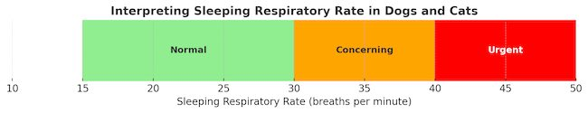

Sleeping Respiratory Rate (SRR)
❤️ What is it? Why measure it? When is it important?
Published on: March 3, 2025
Reviewed on: March 3, 2025
What is SRR?
Sleeping Respiratory Rate (SRR) is the number of breaths your pet takes per minute while sleeping. This simple measurement can provide crucial insights into your pet’s heart health.
How to Measure It
- Watch your pet’s chest rise and fall—one full breath includes both an inhale and an exhale.
- Count the breaths for 30 seconds, then double the number to get the per-minute rate.
- For best results:
- Take the measurement when your pet is fully asleep in a calm, comfortable environment.
- Avoid times when your pet is panting, purring, or vocalizing.
- Repeat 2-3 times at intervals to ensure consistency.
Tip: Use a free app like the Cardalis App (available on iOS and Android) to track and record your pet’s SRR easily. The app helps calculate trends and share data with your veterinarian.
What Is a Normal SRR?
- Healthy dogs and cats: 15–30 breaths per minute
- Concern: More than 30 breaths per minute, especially if consistently above 40
Each pet has its own normal range, so tracking changes over time is often more valuable than a single reading.
Why Is SRR Important?
SRR is one of the best early warning signs of congestive heart failure (CHF).
❤️Heart failure causes breathing difficulties due to fluid buildup in or around the lungs:
- Pulmonary oedema – Fluid in the lungs
- Pleural effusion – Fluid around the lungs
Since SRR is easy to measure at home, it helps detect heart failure earlier than X-rays or scans and can guide treatment decisions.
Other Signs to Watch For
- Coughing: Not always a sign of heart failure. It may be caused by an enlarged heart or other conditions.
- Changes in appetite, activity, or behavior: Cats, in particular, may show very subtle signs of illness.
What to Do If SRR Is High?
🚨Call your vet if:
- SRR is consistently above 30
- It reaches 40 or higher
- Your pet seems unwell or distressed
For emergencies, contact an out-of-hours veterinary service immediately.
Final Thoughts
Regularly monitoring your pet’s SRR is a simple but powerful way to keep an eye on their heart health. By catching problems early, you can help ensure they receive the right treatment at the right time.
Check out my video on the same topic if you want a more in depth explanation: